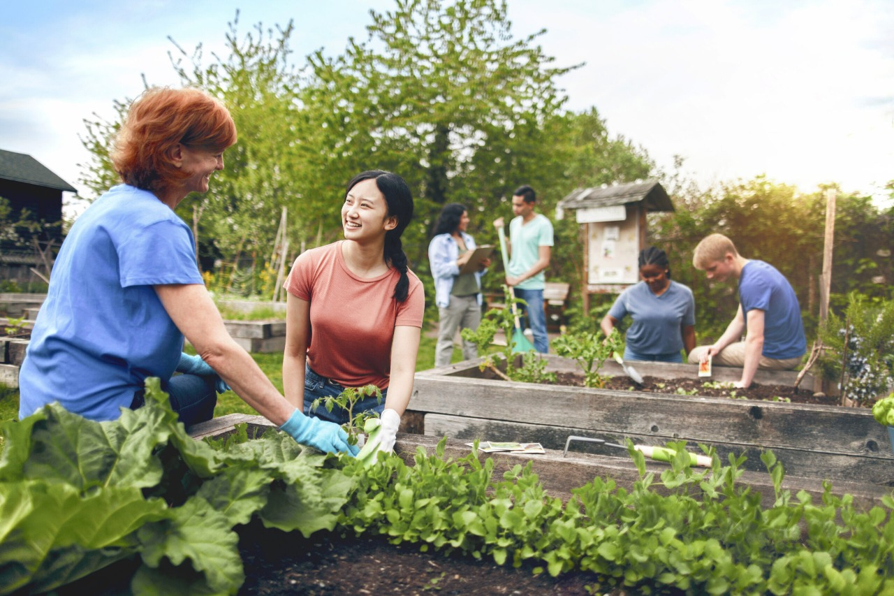
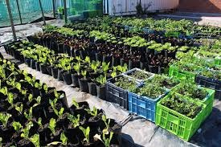
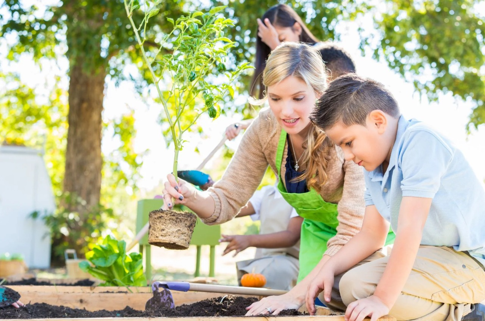

About Us
Our History
Founded in 2018, Hope Harvest Community Garden began as a small group of neighbors passionate about food security and sustainability. Over the years, we have grown into a thriving non-profit organization, providing fresh, organic produce to low-income residents and empowering our community through hands-on education and outreach.
Our Core Values

Community
We believe in the power of working together to create lasting change.

Sustainability
Our practices protect the earth and promote long-term food security.

Education
We share knowledge so everyone can grow their own food and thrive.
Meet Our Team
Lerzel Charles
Founder & Director

Jaden Smith
Garden Coordinator

Mary Jane
Education Lead